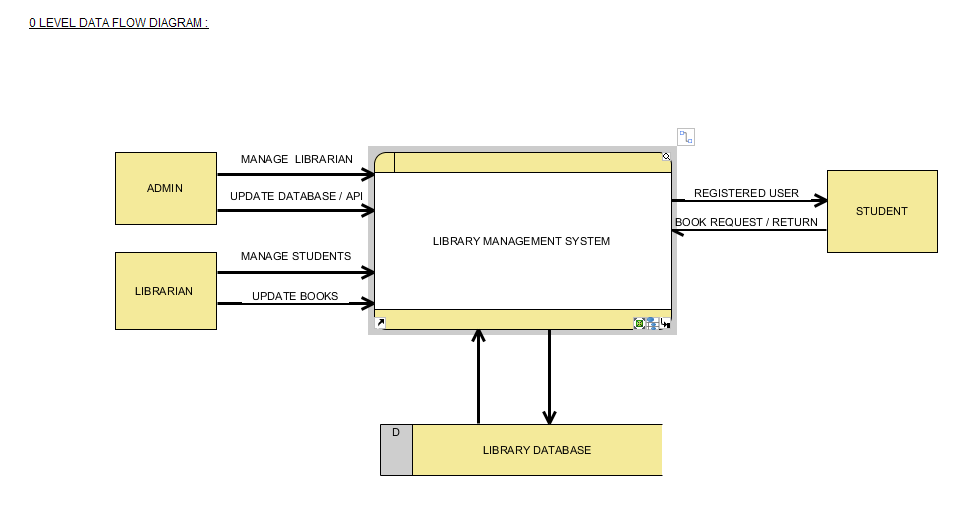
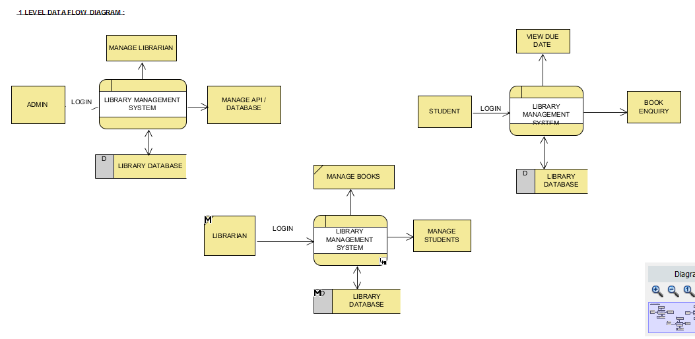
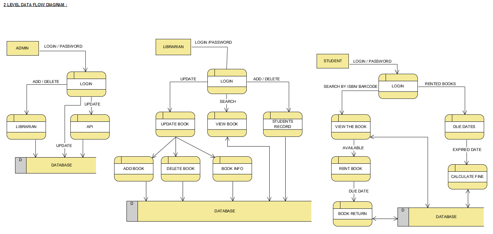
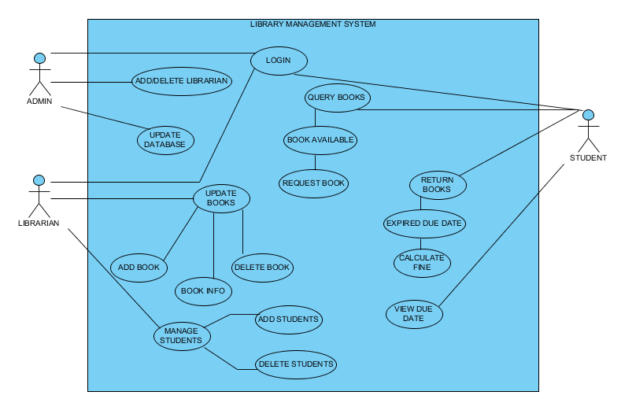

Library Management System Project Report
Library Management System is a software used to manage the catalog of a library. This helps to keep the records of all the transaction of books available in the library. Each patron and the item has a unique ID in the database that allows the Library Management System to track its activity. Library Management Systems are needed in every school, college, or any type of institutions where there is a library present. As the technology around us is growing, the library management systems hasn’t improved that much since 2005. The goal is to make prototype of a simple android based application which can completely handle and (mostly) automate the process of managing a library. It’ll reduce the needs to have a counter full of people (thus slowing and manually doing the process) for issuing and/or depositing books.
Table of Contents
0.1 TASKS
0.1.1 TODO Re-format document [4/8]
[X]Add Abstract[X]Add literature survey[X]Add introduction[-]Add Requirements[2/8][X]Specific Requirements[3/3][X]Hardware Requirements[X]Software Requiements[X]Communication Interfaces
[X]Functional Requirements[3/3][X]The Borrower[X]The Librarian[X]The Administrator
[ ]Performance Requirements[0/3][ ]Speed and Latency Requirements[ ]Precision or Accuracy Requirements[ ]Capacity Requirements
[ ]Dependability Requiremnents[0/3][ ]Reliability[ ]Availability[ ]Robustness or Fault-Tolerance
[ ]Maintainability and Supportability Requirements[0/4][ ]Maintainability[ ]Supportability[ ]Adaptability[ ]Scalability
[ ]Security Requirements[0/3][ ]Access[ ]Integrity[ ]Privacy
[ ]Usability Requirements[0/3][ ]Ease of Use[ ]Learning Curve[ ]Training
[ ]Software System Attributes
[ ]Add Design[0/2][ ]System Design[ ]User Interface Design
[-]Add diagrams[4/6][X]Level 0 DFD[X]Level 1 DFD[X]Level 2 DFD[X]Use Case Diagram[ ]Entity Relationship Diagram[ ]Database Schema Diagram
[X]Add Conclusion[2/2][X]Add Text[X]Add Future Scope
[ ]Add Acknowledgement
0.1.2 TODO Merge with the current project report
1 LITERATURE SURVEY
We've conducted a short survey/review on the works that has been done to improve the library management system of Medium and small libraries. The review consists of a problem statement that has been surfaced during our investigation of previous systems and it also holds a proposition on how to solve the problem with a working model. The attached file also contains a detailed model and SRS of the solution that has been proposed for medium and small libraries.
The review is based on the development that has been done in the last 15 years and sees no reason to look further back than the said timespan because of obsolescence and the rapid development of technology.
1.1 Introduction
Automated Library Management Systems emerged in the 1970-s. Though started as a simple database to house and retrieve a library's holdings, with the inception of the Internet in 1990-2000 timespan, it has been evolved into a much bigger thing. A system that can retrieve data remotely and can hold large clusters of book data and serve them worldwide.
1.2 Previous Works
Any computer based system evolves with the evolution in computer technology itself. Library Management systems are no different.
After the introduction of Web 1.0 (i.e. the Internet), the initial plan of action was to setup and deploy OPAC(Open Public Access Catalog),on a web server, some time after this, rich GUI building tools like VB or VC++ became available.
The web based transaction system for catalogs was first proposed and deployed in the 1990-s after JAVA and .NET became leader in web application development and could make use of the REST model.
In 2000s, the Web 2.0 was introduced and the concept of OTA updates became popular. The web, by this time was fully capable of delivering rich content and reliable information delivery system. The APIs became popular and a lot of open web based REST services for getting information on books became available, such as Amazon and LibraryThing.
But the development somehow stopped after that, people failing to develop reliable cloud based library management system which could be a cost effective solution.
1.3 Problems in Previous Works
Everything when in a constant development cycle has some faults. The instance of Library Management Systems is no different. We try to build the problem statement based on the faults.
1.3.1 Problems with the Evolution in Technology
As already discussed, the Internet evolved to a more cloud based system for everything but Library Management Systems are not evolving. They are still storing all the data in a single database which is accessible only via the library and not directly by the patrons.
For a small or medium library, it's not feasible to run a local server to hold the catalog data of the books that a library holds, let alone serving the data real time to multiple patrons.
1.3.2 Changes in User Behaviors and Demands
The most difficult problem to cope up with is the demands of the users(patrons in this particular case). They are ever increasing and system is far behind the time line which the evolution of Web Based systems are following. The few most common demands by the users are listed here -
- Users want greater freedom in managing the access to information.
- Users want access to the information on a book, not just if the library is holding a book or not.
- More simple UI and search interfaces are demanded.
The most important of all these is that users want everything on a mobile based platform. The current system that is in circulation, is incompetent to handle this problem and needs a refinement, a more flexible, economic and user friendly option.
1.4 Proposed Solution
The solution of the above stated problems can be simplified and divided into two parts.
1.4.1 Upgrading the Current System with Cloud Computing
The current system can be upgraded to cloud computing by simply converting the system to a REST API based data retrieval.
By this, we can send data to a server using AJAX requests from a web page or WebApp and get the data in JSON format. We can then parse the data and show it to the user as the user want.
1.4.2 User Experience Customization
Using REST can grant high modularity on what the server sends to the user based on the request that has been done. For example, we can show the user a book is available or not along with the details of the book if the user wants.
1.4.3 More Features
We can reduce a major portion of manual data entry by populating data fields based upon the entered ISBN using the camera of a phone or (in case it's a computer station) using an EAN-13 code scanner. This can also be done for normal users who just want an information on a book.
2 INTRODUCTION
2.0.1 Purpose
Library is considered as one of the most important things in an educational institute. However, managing a library is no simple task. This can be a primary reason for a communication disaster between a student and the librarians. A more modern and streamlined approach is the sole purpose of this project by which, the communication failures can be avoided.
2.0.2 Scope
The scope of the project is a variable entity. Primarily, the system is targeted for the small and medium libraries but can be scaled easily and modified to run on any sized library.
However, there are also some considerations to be taken, the primary one being that the project is solely focused and targeted on the educational institutions. Taken that into consideration, the project also can be used as a boilerplate for developing solutions for paid and public libraries.
2.0.3 Definitions
- Abbriviations
Abbriviation Full Form LMS Library Management System UI User Interface DB Database API Application Programming Interface REST Representational State Transfer CRUD Create, Read, Update and Delete MVC Model, View and Controller NIC Network Interface Card - Definitions
- Admin
- The administrator of the whole system. Controls mainly the backend and has unrestricted system access.
- User/Patron
- An user or Patron is an end-user of the library who can issue a book from the library.
- Librarian
- Librarians are the people who uses the system for managing their work. As in, issuing and receiving a book back.
2.1 Product Description
2.1.1 Product Description
The product is a Library Management System based on REST, CRUD and a client-server standard MVC application model. Along with the Android application, the product can also have a web based interface as in the back-end of the application, there's an API that's controlling the requests and responses to and from the server.
The API can also be adopted to use for developing the same application for other platforms, namely iOS, Windows Phone, Windows, Linux and macOS.
2.1.2 Product Functions
The product functions on a request and response model. The Application (hereinafter referred to as 'the client') sends an HTTP request and the server responses in according to it, sending back some data in JSON for parsing in the client side. The client then parses the data and generates a view for the user to see based on the data it recieved. Primarily, there are three authentication levels. Admin, Librarian and Student.
- Admin
- The admin is responsible for adding and removing librarians and also the managing the API.
- Librarian
- The librarian is responsible for adding and removing students and also managing books.
- Student
- The students can see the books that are in the library, see if the books are available or not and also the due date.
2.2 Constraints
2.2.1 Constraints
There is virtually no constraint in terms of usability of the app in different environments, from small to very large libraries. As it is built on a semi modifiable API and a very scalable database, different variables and queries can be added easily and the application can be reprogrammed accordingly.
The only real constraint can be the server and database hardaware, but with platforms like Google Cloud Console in play, the cost to performance ration and constraint in hardware should not be a problem.
2.2.2 Dependencies
- Google Mobile Vision
- The Mobile Vision API provides a framework for finding objects in photos and video. The framework includes detectors, which locate and describe visual objects in images or video frames, and an event driven API that tracks the position of those objects in video. Currently, the Mobile Vision API includes face, barcode, and text detectors, which can be applied separately or together.
- Android SDK
- Android software development is the process by which new applications are created for devices running the Android operating system. Applications are usually developed in Java (and/or Kotlin; or other such option) programming language using the Android software development kit (SDK), but other development environments are also available, some such as Kotlin support the exact same Android APIs (and bytecode), while others such as Go have restricted API access. All Java 7 language features are supported, and some Java 8 language features (and additionally some Java 9 code has been backported to work).
- Google Cloud Database
- It is a NoSQL database hosted at Google Cloud Servers with mirrors national and international to reduce data fetch and pushing latency. Also the service includes options for daily, weekly, monthly etc. plans for automated backup of the data.
- Google Crash Reporting
- Applications crash, period. Solving the bugs is a lengthy process when most of the users of the application are non-technical and (mostly) do not understand how to file a proper bug report. We have automated the crash reporting process through Google Cloud’s automated crash reporting service. Which, upon a crash of the applications, submit a logcat and steps to reproduce the crash to the developers.
- Google Storage
- Google storage provides a very useful API for storing images in the cloud. It can be useful if the scaled up application has a facility for storage of book images when entering a book. Or maybe directly fetching from Google Books API for the available books.
2.2.3 Apportioning of Requirements
- Server Side
- Most of the work is done on the server side, so the server side needs to be good according to the requirement of the libary.
- Client Side
- On the other hand, the client side can have any normal android phone and operate flawlessly.
3 REQUIREMENTS
3.1 Specific Requirements
3.1.1 Hardware Interfaces
- Server Side :: Hardware requirements on the server side can be
considered as a variable. It can be changed to meet
the performance rating that is required. But the
bare minimum requirements are -
- 1.4 GHz Single Core Processor (x64 Architecture)
- 512MB of RAM
- 60 GB of HDD (for OS) & 10 GB of free space (for application)
- NIC (10/100 Mbps minimum)
- Client Side :: The client side can use any Android phone. But the
phone should have -
- At least 5.0 Megapixels Camera
- Camera Flash
- 1GB of RAM
- 1.2 GHz Dual Core Processor
3.1.2 Software Requirements
- Server Side :: The server should have -
- Ubuntu 16.04 LTS or up.
- NoSQL Server (MongoDB or Firebase)
- Mail Server
- UNIX DNS Manager (optional, for larger libraries)
- Git (for automated updates)
- OpenSSH (for remote administration)
- Client Side :: The client side should have Android 6.0 + (vanilla or almost vanilla OS is preferred)
3.1.3 Communication Interfaces
- Server Side :: Minimum of Gigabit networking is required on the server side to handle multiple requests and send responses at the same time.
- Client Side :: GSM HSPA+, Wi-Fi(bg/n/ac) or LTE is required. Minimum speed of 4 Mbps.
3.2 Functional Requirements
3.2.1 User Class 1 - The Borrower
3.2.2 User Class 2 - The Librarian
- Request
- Login
- View book details
- View book availability
- Rent a book to a student.
- Deposit a book from the student.
- View borrowed book details / fine details.
- Accept fine.
- Response
- Login success or failure.
- Book details
- Book availability
- Book rent success (due-date)
- Borrowed book details.
- Fine acknowledgment.
3.2.3 User Class 3 - The Administrator
The administrator is the super user of the system. The admin can do anything and modify the system in any way possible.
- Can edit details of users of any level
- Can add librarian
- Have full access to the back-end and front-end of the system.
3.3 Non Functional Requirements
3.3.1 Performance Requirements
- Speed and Latency Requirements
- Precision or Acccuracy Requirements
- Capacity Requirements
The performance requirement should not be an issue as it is a scalable system with the back end in the cloud.
For a small to medium sized library, small to medium subscription of Google Cloud Platform are considerable but larger libraries with bigger administrations require Enterprise Level Google Cloud Platform with Linux Server OS. The application can run on Windows based servers, but is not optimized for it.
The validation and all the checks for the constraints happen on the server side and it's better to do so for preventing security exploits to the system at the cost of a few milliseconds of loss in response time.
3.3.2 Dependability Requirements
3.3.3 Maintainability and Supportability Requirements
3.4 Software System Attributes
- Availability
- Availability defines the proportion of time that the system is functional and working. It can be measured as a percentage of the total system downtime over a predefined period. Availability will be affected by system errors, infrastructure problems, malicious attacks, and system load.
- Conceptual Integrity
- Conceptual integrity defines the consistency and coherence of the overall design. This includes the way that components or modules are designed, as well as factors such as coding style and variable naming.
- Interoperability
- Interoperability is the ability of a system or different systems to operate successfully by communicating and exchanging information with other external systems written and run by external parties. An interoperable system makes it easier to exchange and reuse information internally as well as externally.
- Maintainability
- Maintainability is the ability of the system to undergo changes with a degree of ease. These changes could impact components, services, features, and interfaces when adding or changing the functionality, fixing errors, and meeting new business requirements.
- Manageability
- Manageability defines how easy it is for system administrators to manage the application, usually through sufficient and useful instrumentation exposed for use in monitoring systems and for debugging and performance tuning.
- Reliability
- Reliability is the ability of a system to remain operational over time. Reliability is measured as the probability that a system will not fail to perform its intended functions over a specified time interval.
- Reusability
- Reusability defines the capability for components and subsystems to be suitable for use in other applications and in other scenarios. Reusability minimizes the duplication of components and also the implementation time.
- Scalability
- Scalability is ability of a system to either handle increases in load without impact on the performance of the system, or the ability to be readily enlarged.
- Security
- Security is the capability of a system to prevent malicious or accidental actions outside of the designed usage, and to prevent disclosure or loss of information. A secure system aims to protect assets and prevent unauthorized modification of information.
- Usability
- Usability defines how well the application meets the requirements of the user and consumer by being intuitive, easy to localize and globalize, providing good access for disabled users, and resulting in a good overall user experience.
4 DESIGN
4.1 System Design
4.1.1 Database Design
There are a few points to consider when designing and developing the system.
- Database :: The database should be normalized all the time. Maximum permissible redundancy should not be more than 10% at any instance.
- Backups :: Backups should be designed in such a way that it should be easy enough to replace the corrupted back end with a most recently backed up on withing 15 mins without any failure.
4.1.2 Program Design
4.2 User Interface Design
The Android user interface should follow the material design guidelines provided by Google Inc.
5 DIAGRAMS

Figure 1: Level 0 DFD

Figure 2: Level 1 DFD

Figure 3: Level 2 DFD

Figure 4: Use Case Diagram
5.1 Entity Relationship Diagram
5.1.1 TODO To be made anew
5.2 Database Schema
5.2.1 TODO To be made anew from the JSON Structure
6 CONCLUSION
This is a topic that has never been touched before by any one developing systems for managing libraries. While the world is moving towards a more mobile and cloud based approach, why library management system should stick to the local database and application environment that dates back to the 90's. This approach of library management system will solve problems like redundant information storage, loss of information in case of a natural disaster and also ease of access for the patrons of a library.
6.1 Future Scope
- Launching a platform independent system for reusing and using all the existing and future hardware.
- A greater portability and scalability so that the application can be mended to suit any need that the client wants.
- Developing a totally independent and open source API so that developers can easily use what we've developed and further improve that.
7 ACKNOWLEDGEMENT
This project would not have been possible without the help of Ms. Shalini Mitra, Asst. Prof., Dept. of IT, CIEM and Mr. Samir Biswas, HOD, Dept. of IT, CIEM.
However, we also thank Rajkumar Pramanik of Hybriona Labs, Gujrat for helping us when we were stuck in a loop of bad codes and ideas.
Finally I would like to extend my deepest gratitude to all the teachers of the IT Department of CIEM without whose love, support and understanding we could never have completed this project proposal.